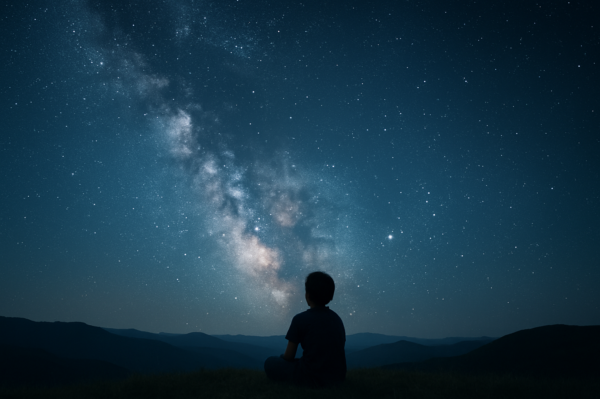
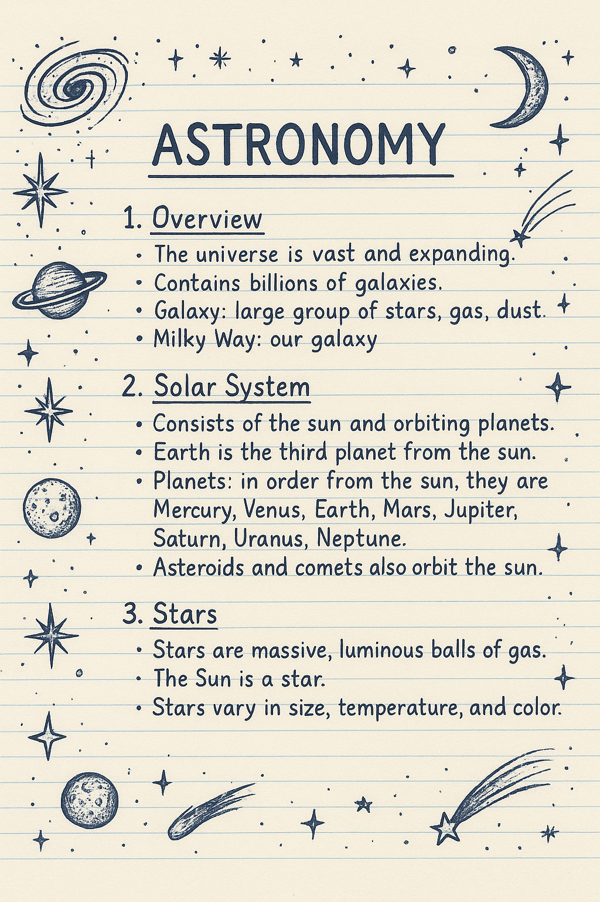
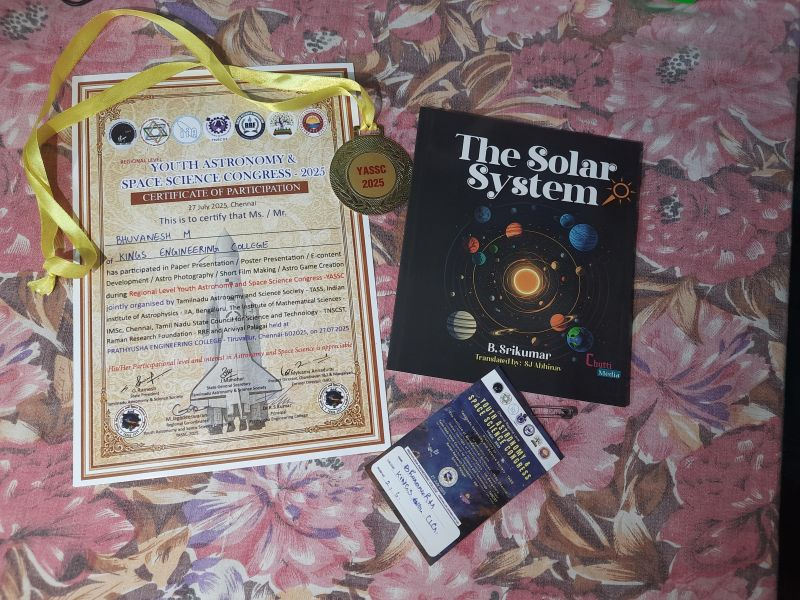
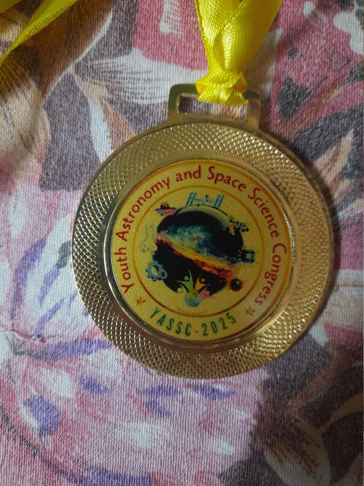

A Cosmic Beginning
From childhood, I have been deeply fascinated by the cosmos — stars, the moon, and the mysteries of space. This early curiosity shaped my interests and later guided my academic and professional journey.

✨Grade 11: The Spark
In Grade 11, I was introduced to programming through Python, my very first programming language. Although many of my peers and seniors were already ahead in the field, my passion enabled me to quickly catch up. By the end of that year, I secured the Topper Award in Computer Science.
During this time, I was particularly drawn to practical aspects of learning — creating small programs, experimenting with gaming logic, and connecting mathematics with computation. While theory had its place, my inclination was toward hands-on exploration. By Grade 12, I had decided to pursue my career as a software developer, building on skills such as MySQL to strengthen my practical foundation.

📘College Challenges
I joined Engineering College, affiliated with Anna University, to pursue a B.E. in Computer Science and Engineering. The first semester, however, was dominated by theory-based subjects, which felt restrictive and unengaging. Despite this challenge, I remained determined to pursue practical innovation.
🚀The Birth of CosmoTalker
A breakthrough came on March 2, 2025, when I deployed the first edition of CosmoTalker, a Python library that unified my three passions: mathematics, the cosmos, and computing.
Until then, I believed that only large organizations like the Python Software Foundation could create such libraries. CosmoTalker proved otherwise. It was my personal project, deployed on PyPI, and made available for global download.
🛰️YASSC 2025
Around this time, I learned about YASSC 2025 (Youth Astronomy and Space Science Congress by Tamil Nadu Astronomy and Science Society). I decided to participate with a close school friend. On July 27, 2025, at Prathyusha Engineering College, we competed at the district level, my friend in astrophotography and I in paper presentation.
My paper on CosmoTalker advanced to the state level, while my friend’s work was not selected. For the state level, we worked together, I focused on enhancing CosmoTalker with offline AI integration (which later evolved into Oolit), while my friend contributed with research support and documentation.
Initially, our first submission was rejected due to formatting issues and a high AI-generated content percentage. We restructured and rewrote the entire work manually. Upon resubmission, our paper passed with 3% plagiarism and 0% AI content, meeting all academic integrity standards. We officially received acceptance to present at the state-level YASSC 2025.
🚌The Sivakasi Adventure
The state-level conference was scheduled from August 15–17, 2025, at Sri Kaliswari College of Arts and Sciences, Sivakasi. Despite the challenges of travel during the festival season — with tripled fares and delayed arrivals — we reached Sivakasi late on August 15 (around 3.30pm after 18 hrs of journey!). On August 16, 2025, We presented our paper in the afternoon session.(around 3pm)
🏅The Moment of Triumph
The final day, August 17, 2025, was historic. Distinguished scientists attended the event, including the “Moon Man of India” — Project Director of Chandrayaan-1 & 2 and Mangalyaan, and former Director at ISRO.
At around 3:30 PM, recognitions were announced. Initially, We believed we had missed our chance, as most participants were already called. But to our surprise, our project was honored. Receiving a medal directly from the Moon Man of India was a defining and unforgettable moment in my journey.
🌠The Legacy of CosmoTalker
That recognition solidified my path. Today, CosmoTalker continues to evolve, achieving 50K+ downloads worldwide (including mirrors). It stands as the first cosmic-themed Python library, enhanced with offline features and expanding with online capabilities.
This project has also been a collaborative learning experience. My friend, originally from a biology background with no programming exposure, learned and contributed significantly through this journey — especially in research and paper preparation.
CosmoTalker represents not only my personal vision but also the merging of cosmic curiosity, mathematical reasoning, and computer science innovation. It is a living project, continuing to grow and inspire.
🖼️ Gallery

